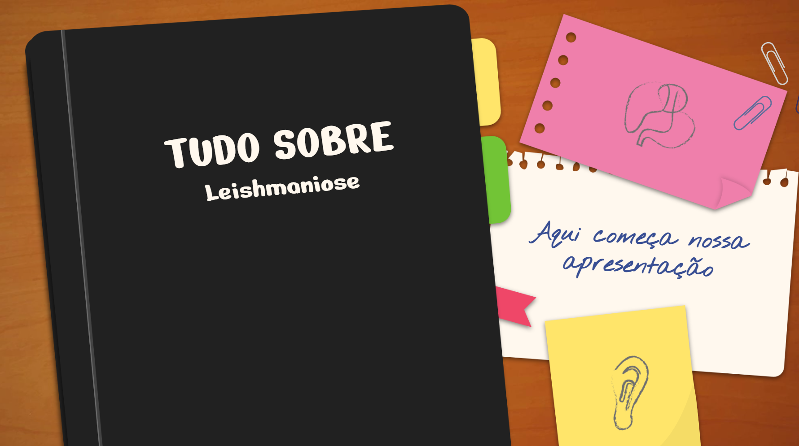

Ciências da Natureza
A área de Ciências da Natureza me fez enxergar o mundo com outros olhos. Aprendi como nosso corpo funciona, como a química está em tudo e como a física explica desde um simples movimento até os fenômenos do universo. Foi onde comecei a entender a vida de forma mais curiosa, consciente e admirada.
Minha Jornada nas Ciências da Natureza
1º Ano - Biologia
No primeiro ano, mergulhei no mundo da química e comecei a entender que tudo ao nosso redor é transformação. Aprendi sobre substâncias, reações, misturas, separações e comecei a enxergar a química nos alimentos, nos produtos, nos remédios e em tudo que usamos.
2º Ano - Química
No segundo ano, o conteúdo ficou mais intenso e eu amadureci muito na forma de interpretar o mundo. Estudei temas como movimentos sociais, revoluções, conflitos, relações de trabalho, poder e globalização.
3º Ano - Física e Ecologia
No terceiro ano, meu foco foi a física e a ecologia. Entendi sobre energia, movimento, luz, eletricidade e também sobre o impacto das nossas escolhas no meio ambiente. Foi o ano em que percebi que ciência não é só teoria — ela ajuda a cuidar do planeta.
Atividades ao Longo dos Anos

Compreendendo a vida por dentro
No primeiro ano, aprendi sobre o que existe dentro de nós: células, tecidos, estruturas e processos que fazem nosso corpo funcionar todos os dias. Foi quando comecei a perceber que aquilo que parece simples só acontece porque uma "cidade inteira" trabalha dentro da gente.

A magia invisível da química
No segundo ano, entrei no mundo da química e percebi que tudo ao nosso redor é transformação: alimentos, remédios, combustíveis, objetos — tudo depende de reações invisíveis que acontecem o tempo todo. Comecei a ver a química como a ciência que explica a vida real.

O universo, a energia e nosso lugar
No terceiro ano, aprofundei meus conhecimentos em física e ecologia. Aprendi sobre energia, forças, movimento, luz, eletricidade e sobre como o planeta reage às nossas ações. Percebi a importância da ciência na construção de um futuro mais consciente e sustentável.

Exemplo de um trabalho desenvolvido
Trabalho desenvolvido por mim durante o terceiro ano, doenças e vírus, aprendemos como o corpo reage e as ondas também. O mundo sendo um lugar vasto apresenta muitas dificuldades para nós e a vida.